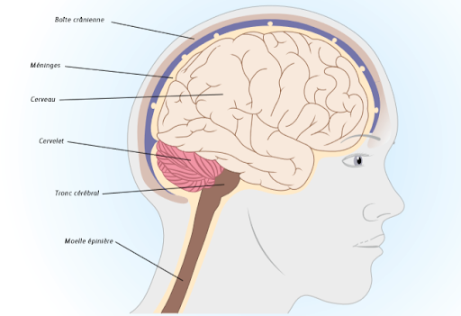

Le Cancer Du Cerveau.
Description
Le cancer du cerveau est une tumeur cancéreuse du cerveau. Qu'elle soit située dans le cerveau ou dans un autre endroit de l'organisme, une tumeur est constituée d'une masse de cellules qui se multiplient d'elles-mêmes et de manière incontrÔlée. Les tumeurs peuvent être bénignes ou malignes.
Les tumeurs cérébrales bénignes sont des accumulations anormales de cellules qui se multiplient lentement et restent le plus souvent isolées du tissu cérébral normal avoisinant. Ces tumeurs se développent lentement, ne se propagent pas à d'autres parties du cerveau et sont généralement plus faciles à exciser que les tumeurs malignes. Les tumeurs malignes se multiplient et se développent rapidement. Il est difficile de délimiter ces tumeurs par rapport au tissu cérébral normal avoisinant. C'est pour cette raison qu'il est difficile de les exciser complètement sans endommager le tissu cérébral avoisinant.
Certains types de tumeurs, comme les méningiomes (prenant origine dans les méninges, le revêtement qui entoure le cerveau) ou les tumeurs germinales peuvent être bénignes dans certains cas et malignes dans d'autres.
Causes.
La cause exacte du cancer reste inconnue. On appelle tumeur cérébrale primitive un cancer du cerveau qui prend naissance dans le cerveau même. Il peut se propager aux régions avoisinantes du cerveau et les détruire. Un cancer du sein, du poumon, de la peau, ou des cellules sanguines (leucémie ou lymphome) peut également se propager (former des métastases) au cerveau, provoquant un cancer du cerveau métastatique. Ces groupes de cellules cancéreuses peuvent alors se multiplier dans une région unique ou dans plusieurs parties du cerveau.
SymptÔmes et Complications
Le cancer du cerveau entraîne des symptÔmes lorsqu'il exerce une pression sur le cerveau ou qu'il détruit du tissu cérébral. Les symptÔmes dépendent de la taille et de l'emplacement de la tumeur, ainsi que de la vitesse à laquelle elle se multiplie. Bien que des maux de tête soient souvent un symptÔme du cancer du cerveau, il est important de se rappeler que la plupart des maux de tête ne sont pas provoqués par le cancer mais sont causés par des affections moins sérieuses comme la migraine ou de la tension. Les maux de tête provoqués par une tumeur cérébrale sont souvent intenses, associés à des nausées et des vomissements et sont souvent plus intenses en début de journée. Ils peuvent durer longtemps ou bien survenir par intermittence.
